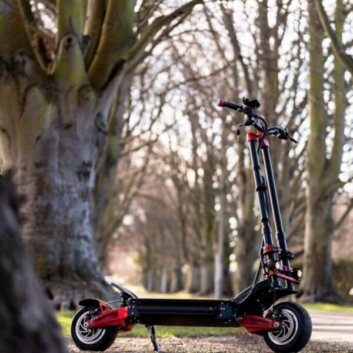
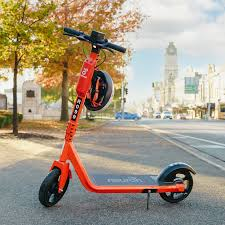
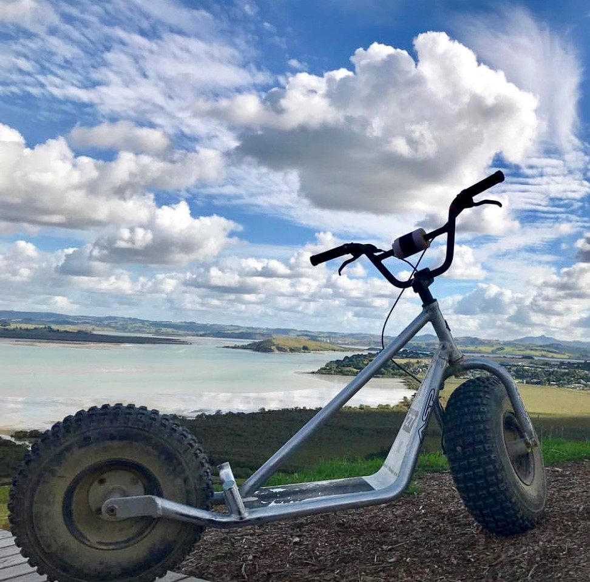

Mountain BikeThis mountain bike is a specialised bicycle designed for off-road riding, specifically on rough terrains such as trails, mountains, and forest paths. It features a sturdy frame, wide knobby tires with excellent traction, and a suspension system to absorb shocks and bumps. Mountain bikes typically have multiple gears to tackle various inclines and terrains efficiently. With their durable construction and capable components, mountain bikes provide riders with the agility, control, and stability needed to navigate challenging trails and enjoy the thrill of off-road cycling adventures. Half-day: $70 Full-day: $90 Available at Ma̅kara Peak Mountain Bike Park & Hutt River Valley |
Electric BikeOur electric bike is a bicycle with an integrated electric motor and rechargeable battery. It offers pedal-assist or full electric propulsion, making cycling easier and enabling riders to cover longer distances with less effort. It combines the benefits of traditional biking with the convenience of electric power, promoting eco-friendly transportation and expanding accessibility to cycling for various purposes. Half-day: $70 Full-day: $90 Only available at the Wellington Harbour Front |

Road BikeOur road bike is a lightweight and efficient bicycle designed for riding on paved roads. It features narrow tires and a streamlined frame to maximize speed and maneuverability. Road bikes are great for covering long distances quickly and are suitable for various types of road cycling, including fitness rides, commuting, and leisurely road trips. Half-day: $50 Full-day: $70 Only available at the Wellington Harbour Front |

Off-Road ScooterOur off-road scooter is a rugged and durable scooter designed to handle rough and uneven surfaces. It features a sturdy frame, wide pneumatic tires with deep treads, and robust suspension systems to provide enhanced stability and shock absorption. With their off-road capabilities, these scooters allow riders to explore outdoor trails, dirt paths, and adventurous off-road environments, offering a thrilling and versatile riding experience beyond traditional urban settings. Half-day: $40 Full-day: $60 Available at Ma̅kara Peak Mountain Bike Park & Hutt River Valley |

Electric ScooterOur electric scooter is a compact and lightweight personal transportation device that is powered by an electric motor. It features a handlebar for steering, a deck for standing, and typically has two small wheels. Electric scooters are eco-friendly alternatives to traditional gasoline-powered scooters and offer a convenient and efficient mode of transportation for short-distance travel. They are powered by rechargeable batteries and can reach varying speeds depending on the model. Electric scooters are known for their ease of use, quick acceleration, and low maintenance requirements. They provide a fun and practical way to navigate urban areas, campuses, and other compact environments while reducing carbon emissions. Half-day: $30 Full-day: $50 Only available at the Wellington Harbour Front |

Monster ScooterOur monster scooter is a robust and powerful scooter designed for off-road adventures and adrenaline-fueled rides. It combines the features of a traditional scooter with elements inspired by dirt bikes and off-road motorcycles. Monster scooters typically have larger, knobby tires, a sturdy frame, and a powerful motor for enhanced performance on rough terrains. They offer excellent stability and maneuverability, allowing riders to conquer uneven surfaces and tackle obstacles with ease. Whether you're exploring rugged trails or seeking thrilling off-road experiences, a monster scooter provides a thrilling and exhilarating ride for those looking for off-road excitement on two wheels. Half-day: $50 Full-day: $70 Available at Ma̅kara Peak Mountain Bike Park & Hutt River Valley |